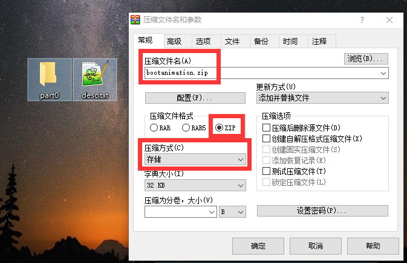

Android系统客制化

文章目录
整理记录在android上的客制化调整。
系统层面
更换开机LOGO
前方案
- 找一张图片，分辨率为：1920×1080，这里以linuxlogo.png为例；
- 换格式，用以下命令(如工具未安装可用以下指令安装：
shell sudo apt-get install netpbm pngtopnm linuxlogo.png > linuxlogo.pnm pnmquant 224 linuxlogo.pnm > linuxlogo224.pnm pnmtoplainpnm linuxlogo224.pnm > logo_linux_clut224.ppm - logo_linux_clut224.ppm替换文件：kernel/drivers/video/logo/logo_linux_clut224.ppm
- 重新编译内核，把生成的kernel.img烧进板子即可。
- 注意：如果你的boot.img中包含了kernel，记得重新烧一个没有kernel的boot.img，或者重新编译boot.img
后方案
- 前方案失效，尝试直接替换kernel下的图片就行了，简单粗暴。
开机动画
- 找15张图片(不一定要15张的，但最好是1080P的)，按顺序命名，如10001.png、10002.png、1003.png。
- 把命名好的图片放到一个文件夹中，part0
- 创建一个文档，名字为：desc.txt (名称固定！)
- 在创建的文档中写入以下内容：
1920 1080 15 p 0 0 part0- 第一行是指动画文件的宽度，长度，每秒播放帧数。受到机器的影响，一般开机CPU满负荷运行，开始的一段时间播放帧数会低于设定帧数，所以前一段的动画的设计需要考虑到这一点。
- 第二行，p指标识符，0代表无限循环，0代表阶段间隔时间为0，part0代表对应文件夹名称。如果两个文件夹可以这么写
1920 1080 15 p 1 0 part0 p 0 0 part1
压缩：选中图片文件夹part0和desc.txt（windows下打包前将图片文件夹中的Thumbs.db删除），然后右键选择WINRAR的”添加到压缩文件”进入自定义压缩文件设置：压缩文件格式选择：ZIP，压缩方式必须选择：存储（否则动画显示不出来），名字为bootanimation.zip，关机动画名称为shutdownanimation.zip。

编译版本集成： 找一个确定会编译到的mk文件
# 如device/rockchip/rk3288/rk3288.mk, 加入开机动画包 PRODUCT_COPY_FILES += device/rockchip/rk3288/bootanimation.zip:system/media/bootanimation.zip # 参考: device/leadcore/common/device.mk PRODUCT_COPY_FILES +=/framework/base/cmds/bootanimation/bootanimation.zip:/system/media/bootanimation.zip重新编译上层，把生成的固件烧入板子即可。
可以考虑直接替换/system/media/bootanimation.zip查看效果。
应用层面
待补充
文章作者 sslyxhz
上次更新 2018-02-03